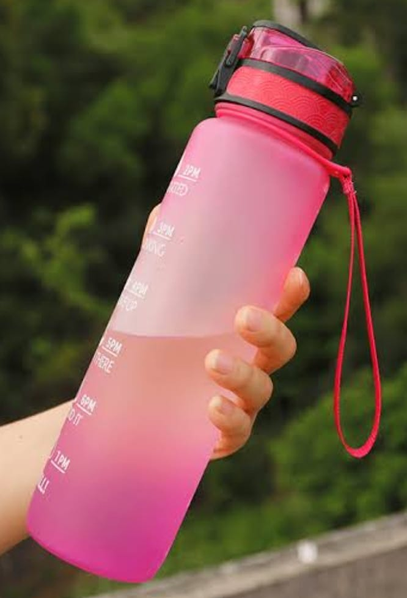
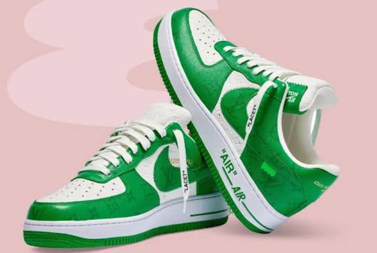

CASE STUDY BETWEEN GOOGLE LENS AND MOBILNET

VS

Output on GOOGLR LENS -
Water bottle
Output on Mobilenet Model -
Water bottle
Results -
Both are the same
Output on GOOGLR LENS -
bed, pillow, blanket
Output on Mobilenet Model -
Bathtub, tub
Results -
Google lens is more accurate
